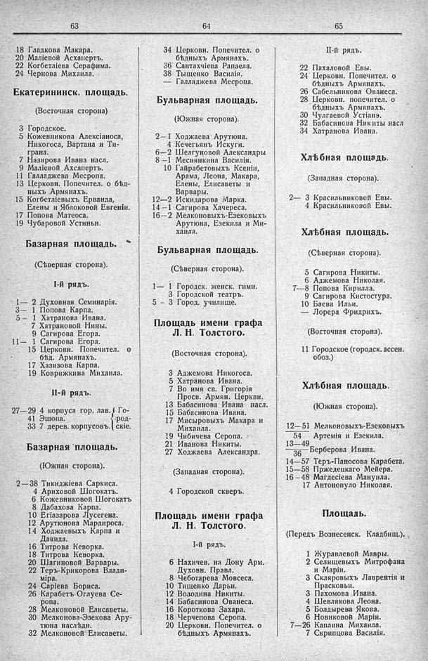

Лист источника 527
Скан

Распознанный текст
63
18 Гладкова Макара.
20 Маліевой Асхапертъ.
22 Когбетліева Серафима.
24 Чернова Михаила.
Екатерининск. площадь.
(Восточная сторона)
3 Городское.
5 Кожевникова Алексіаноса,
Никогоса, Вартана и Ти-
грана.
7 Назирова Ивана насл.
9 Маліевой Асхапертъ.
11 Галладжева Месропа.
13 Церковн. Попечител. о бѣд-
ныхъ Армянахъ.
15 Когбетліевыхъ Ерванда,
Елены и Яблоковой Евгеніи.
17 Попова Матеоса.
19 Чубаровой Устиньи.
Базарная площадь.
(Сѣверная сторона).
I-й рядъ.
1— 2 Духовная Семинарія.
3— 1 Попова Карпа.
5— 1 Хатранова Ивана.
7 Хатрановой Нины.
9 Сагирова Егора.
11— 1 Сагирова Егора.
15 Церковн. Попечител. о
бѣд. Армянахъ.
17 Хазизова Карпа.
19 Коврижкина Михаила.
II-й рядъ.
27—29 4 корпуса гор. лав. } Го-
41 Эшопа. } род-
33 7 дерев. корпусовъ. } скіе.
Базарная площадь.
(Южная сторона).
2—38 Тикиджіева Саркиса.
4 Ариховой Шогокатъ.
6 Кожевниковой Шогокатъ
8 Дабахова Карпа.
10 Егіазарова Лусегена.
12 Арутюнова Мардироса.
14 Ходжаевыхъ Карпа и
Давида.
16 Титрова Кеворка.
18 Титрова Кеворка.
20 Шагиновой Варвары.
22 Теръ-Крикорова Влади-
міра.
24 Саріева Бориса.
26 Карабетъ-Оглуева Се-
ропа.
28 Мелконовой Елисаветы.
30 Мелконова-Эзекова Ару-
тюна наслѣдн.
32 Мелконовой Елисаветы.
64
34 Церковн. Попечител. о
бѣдныхъ Армянахъ.
36 Сантахчіева Рапаела.
38 Тыщенко Василія.
— Галладжева Месропа.
Бульварная площадь.
(Южная сторона).
2—1 Ходжаева Арутюна.
4 Кечегьянъ Искуги.
6—2 Шелгуновой Александры
8—1 Меснянкина Василія.
10 Гайрабетовыхъ Ксеніи,
Арама, Леона, Макара,
Елены, Елисаветы и
Варвары.
12—2 Искидарова Марка.
14—1 Сагирова Хачереса.
16—2 Мелконовыхъ-Езековыхъ
Арутюна, Езекила и Ми-
хаила.
Бульварная площадь.
(Сѣверная сторона).
1— 1 Городск. женск. гимн.
3 Городской театръ.
5 — 3 Город. училище.
Площадь имени графа
Л. Н. Толстого.
(Восточная сторона).
3 Аджемова Никогоса.
5 Хатранова Ивана.
7 Во имя св. Григорія
Просв. Армян. Церкви.
13 Бабасинова Ивана насл.
15 Бабасинова Ивана.
17 Мисыровыхъ Макара и
Михаила.
19 Чибичева Серопа.
21 Иванова Никиты.
27 Ходжаева Александра.
(Западная сторона).
4 Городской скверъ.
Площадь имени графа
Л. Н. Толстого.
I-й рядъ.
6 Нахичев. на Дону Арм.
Духовн. Правл.
8 Чеботарева Мовсеса.
10 Тищенко Дарьи.
12 Володина Никиты.
14 Бабасинова Ованеса.
16 Короткова Захара.
18 Черчепова Серопа.
20 Церковн. Попечител. о
бѣдныхъ Армянахъ.
65
II-й рядъ.
22 Пахаловой Евы.
24 Церковн. Попечител. о
бѣдныхъ Армянахъ.
26 Сабельникова Ованеса.
28 Церковн. попечител. о
бѣдныхъ Армянахъ.
30 Чулгаевой Устіанэ.
32 Бабасинова Никиты насл
34 Хатранова Ивана.
Хлѣбная площадь.
(Западная сторона).
2— 3 Красильниковой Евы.
4 Красильниковой Евы.
Хлѣбная площадь.
(Сѣверная сторона).
5 Сагирова Никиты.
6 Аджемова Николая.
7—8 Попова Кирилла.
9 Сагирова Кистостура.
10 Баева Ильи.
— Лорера Фридрихъ.
(Восточная сторона).
11 Городское (городск. ассен.
обоз.)
Хлѣбная площадь.
(Южная сторона).
12—51 Мелконовыхъ-Езековыхъ
54
13—49
36 Берберова Ивана.
14—57 Теръ-Паносова Карабета.
15—58 Пржедецкаго Мейера.
16—48 Магдесіева Мануила.
17 Антонопуло Николая.
Площадь.
(Передъ Вознесенск. Кладбищ.).
1 Журавлевой Мавры.
2 Селищевыхъ Митрофана
и Маріи.
3 Скляровыхъ Лаврентія и
Прасковьи.
3 Пахомова Ивана.
4 Шевлякова Леона.
5 Болдырева Якова.
6 Новиковой Маріи.
7—26 Каплина Михаила.
7 Скрипцова Василія.